OneStream in The Real World and Troubleshooting
OneStream in The Real World and Troubleshooting
OneStream Project Implementation
Every OneStream implementation is unique, but a common methodology can be adopted where the project team completes a number of phases, leading to a successful go-live and beyond.
This chapter aims to provide a high-level understanding of how a software consultant utilizes a structured approach to software implementation and the Software Development Life Cycle (SDLC) for those new to the field. This introductory read also serves as a good segue to the OneStream Foundation Handbook, specifically the chapter on ‘Methodology and the Project’, as well as the ongoing maintenance.
Here is this chapter’s learning journey:
Figure 10.1
At the start of the book, when discussing OneStream artifacts, I listed the SDLC phases under the headings of Analyze, Design, Build, Test, and Rollout. Each phase is a collaborative team effort, ensuring efficient working practices day-to-day throughout the project’s timeline, while also helping to minimize any risk factors.
Top Training adopted these phases as their methodology, working with a project team comprised of an administrator, OneStream consultant, Top Training subject matter expert(s), and an engagement or project manager.
OneStream in The Real World and Troubleshooting › OneStream Project Implementation
Analyze
The initial scoping session with the consulting team and Top Training project stakeholders would have been a discussion of their current processes, pain points, and what is expected of future processes. After this, a requirement-gathering workshop would have taken place.
The workshop introduces the team members and discusses the project’s objectives and expectations. For Top Training, this involves transforming their existing planning, consolidation, and reporting to OneStream.
The analyses drill down to the operational requirements, which include the entities, chart of accounts, and possible cost center / profit center, products, plus regions that may need to be incorporated as part of the platform’s metadata setup.
The Analyze phase seeks to explore Top Training’s current ecosystem and establish data integration in terms of the various data sources and how the data load can be streamlined into a workflow task.
For the preparation of planning and/or consolidation reporting, questions might include: Will this entail reporting in both a legal and management structure? Will there be additional reporting requirements (for example, by customer or product or both)? Also, which key performance indicators and variance analyses are required.
Before the workshop, the Top Training team would have provided a sample of their data sources, the existing chart of accounts, a list of users who interact with the platform, and documentation (including existing report formats, formula definitions, and calculated values) for the consulting team to have analysed then and discuss now.
For the consulting team, the goal will be to collect information from Top Training’s subject matter experts to drive the next stage, which is the Design phase. This can be captured by category, priority, and in-scope requirements descriptions.
OneStream in The Real World and Troubleshooting › OneStream Project Implementation
Design
This phase leverages the knowledge acquired in the Analyze phase to inform the design of Top Training’s data integration, dimensionality, cubes, calculations, workflow structures, security, and reports. The design will incorporate thoughts on performance, user experience, and ease of system administration, with consultants trying to balance these and seeking to future-proof the application.
Various design areas are worked on by the OneStream team. This will be presented in a design document to Top Training’s subject matter experts, who will also provide input and feedback until the document has been agreed and signed off.
Areas such as data integration can be worked on to understand the different sources and target areas. For example, whether the data load is coming directly from other systems or from files, which of the source transactions are targeting cubes, and which will reside in the staging table.
Other areas – such as workflow design – require knowledge of whether the setup will be centralized (with corporate performing the data load), or decentralized (relying on operational staff to load the data). Once loaded, is the data going to be validated or certified, and how many users are involved before the workflow gets signed off and consolidation can take place?
This is also a good opportunity to showcase what the platform is expected to do once live.
OneStream in The Real World and Troubleshooting › OneStream Project Implementation
Build
When the application build in OneStream begins, it is not just a case of lifting the old and putting it into the new. With the requirements matrix and design documentation completed from the previous phases, the project team should use OneStream’s exceptional features to enhance or streamline (if possible) the processes.
The correct building of the metadata (the most important part of the design and build phase) – from the start – provides a good foundation for all other artifacts. Metadata is built upon the structures required to support Top Training’s various reporting formats.
The use of OneStream’s Extensibility feature (as discussed in chapter 4 on Cubes), should be part of the design and build, allowing the financial model to span multiple business areas and scenarios within the same application. This entails putting a lot of thought into the design of Top Training locations, which can be a separate Entity dimension for each region or business area and then connected as one group hierarchy for corporate. This will, in turn, provide the capability to have individual business area cubes connect to the top corporate cube.
The chart of accounts built in OneStream helps collate all of the group’s values. The creation of robust data sources and transformation rules, therefore, provides an easy-to-follow audit trail back to the transaction’s origin.
During the data integration and data load build, consider how far back the transactional values need to be. Too much historical data may be an unnecessary overload, with the risk that it will either not be used or cannot be explained. Historical data should be within the bounds of comparison to prior years or used for future seeding. As data is validated by the client in OneStream, too many years may delay the go-live date.
Following the build of dimensions, cubes, and data integration, other artifacts can be worked on, including the tasks that make up the workflow, formulas that make up the calculated values, and reports.
The reports that will have a common, consistent build, can be used as templates for the administrator to take forward when creating further reports.
Security can be applied in the application by user, role, and group matrix – all of which would have been started in the design document. The key to security is not to overcomplicate, and to keep the setup maintainable by starting with a basic security model and then continuing to refine and enhance as the app matures.
OneStream in The Real World and Troubleshooting › OneStream Project Implementation
Test
Thorough testing and build sign-off make for an easy post-rollout period. The goal is to avoid any major showstoppers once the application goes live. Key goals of testing are for end-users to try out the new system, validate functionality, and compare OneStream reports with their existing reports.
Broadly speaking, testing should ensure the application is performing as expected and that users accept the operations of their new system. But with so much relying on a smooth transition from the legacy way, to what is expected to be a new streamlined, efficient, and faster way of working, testing can be broken down into further categories, each focusing on a different aspect of the platform.
As mentioned at the outset, the OneStream Administrator Handbook offers a detailed examination of testing and its various types, connecting them in a comprehensive manner. Here are some key testing headlines.
OneStream in The Real World and Troubleshooting › OneStream Project Implementation › Test
Unit and Integration Testing
This entails testing each of the artifacts (or a series of artifacts as a group) to verify that the outcome is as intended. A unit test could, for example, involve checking the output of a business rule. Alternatively, an import workflow task has been built, and an integration test is applied to verify that the data source and transformation rules are functioning correctly with the data being loaded, moved into the staging area, and then loaded into the cube.
OneStream in The Real World and Troubleshooting › OneStream Project Implementation › Test
Data Integrity and Data Validation Testing
Data integrity ensures that data is accurate from import to reporting, with any necessary calculations and adjustments applied in-between, resulting in the correct final value. Data validation provides an additional layer of data integrity, ensuring that the correct number in OneStream matches the one in the legacy system (this typically occurs when a parallel run has been executed). It is recommended – during this testing phase – to do at least one parallel testing cycle with the existing planning and reporting system against OneStream.
OneStream in The Real World and Troubleshooting › OneStream Project Implementation › Test
User Acceptance Testing (UAT)
After an initial training session with the testers (who will then be the core end-users), test scripts are produced that outline the steps required for a desired result. The training session demonstrates login and navigation around the platform, providing examples of how to pass or fail a test script. The hand-picked testers play a key part in the overall sign-off because, in addition to testing the new platform before rollout, they possess the expertise and business knowledge to accept or reject the outcome.
OneStream in The Real World and Troubleshooting › OneStream Project Implementation › Test
Performance Testing
This type of testing requires a coordinated effort to almost break the system with data loads and mimics many users logged in simultaneously. Ultimately, it provides the reassurance to Top Training that the design and configuration are ‘beyond sufficient’ to support the end-user experience.
OneStream in The Real World and Troubleshooting › OneStream Project Implementation
Rollout
After testing has been signed off, the system will be ready to go live. The Rollout phase would have been planned by the Top Training project team months in advance for a smooth transition from their legacy system. This would have initially involved migrating from the old to the new system, training groups of users, and ensuring support was in place.
The key to a smooth transition is to assess the size of the rollout. If centralized (e.g., located solely at Top Training’s corporate headquarters), then the project team should be situated in one place. If decentralized, both training and support teams will either travel to regional Top Training locations, or virtual coordinated efforts may have to take place. Another option for a decentralized approach is to phase the rollout, with each country having its own completion milestone before the rollout of the next country begins.
The training of the platform can be documented and saved within OneStream’s File Explorer (inside the platform, where the training documentation can be uploaded into a public folder) or within dashboard files.
End-user support can take the form of straightforward IT support or – as in Top Training’s case – there is a dedicated administrator from day one who has been appropriately trained and who knows the application; they are a subject matter expert in Top Training’s business.
Eventually, the support mechanism may grow into its own function, evolving to a center of excellence (CoE) setup. This will involve a team of individuals dedicated to supporting the OneStream Application. The team is represented by members who have a direct impact on OneStream (i.e., systems, finance, and audit functions).
The points to consider for a dedicated and successful center of excellence model:
OneStream in The Real World and Troubleshooting › OneStream Project Implementation › Rollout
Roles and Responsibilities
Roles and responsibilities are defined, with the main administrator of the application providing the leadership to sub-administrators and power users, as well as subject matter experts around Top Training.
The CoE should have access on a global scale to individual expertise across the various functions that have a direct connection with the platform.
OneStream in The Real World and Troubleshooting › OneStream Project Implementation › Rollout
Governance
Decision-making processes and sign-off from various reporting lines are implemented to deliver effective and efficient changes to the application as needed.
To ensure the CoE stays aligned with organizational goals and strategies, the CoE team works closely with internal stakeholders who provide support where needed, alongside buy-in from a member of the executive leadership team. This will help with securing necessary resources, including funding and personnel.
Additionally, a steering committee can be formed to provide guidance and oversight. This can be made up of individuals from various departments with specialized knowledge, and seniors with decision-making powers.
OneStream in The Real World and Troubleshooting › OneStream Project Implementation › Rollout
Central Repository
A go-to repository set up for project documentation, best practices, and naming conventions that have been adopted, plus tools and training resources available for users.
OneStream in The Real World and Troubleshooting › OneStream Project Implementation › Rollout
Improvement and Innovation
Improvement can come from continuous feedback on the platform, in terms of agreed-upon KPIs (including performance), or agreed-upon reporting cycle targets. Innovation can take the form of identifying other areas in Top Training that will benefit from Solution Exchange use cases.
OneStream in The Real World and Troubleshooting
Troubleshooting – You’ve Got This!
After the Rollout phase, and the application is in full use, a good training program will aid users with the knowledge of what to do in a given situation (e.g., a file will not load, or data entry in a cell is not possible when it should be, or reports will not render correctly). Where the solution lies beyond an end-user’s platform access, the administrator (and ultimately the Center of Excellence team) will provide a permanent fix by updating a design or configuration feature. This part of the chapter will cover some examples of this.
Roll-up of Data
Account dimension settings apply financial intelligence to the roll-up of data. An example of an issue here might be if the values in the parent do not aggregate correctly, for example, Net Sales incorrectly sums up the child, Operating Sales and Operating Cost of Goods Sold (the child of Operating Sales) when it should be the difference.
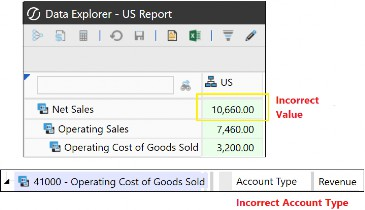
Figure 10.2
Here, the Account Type needs to be amended (from the default Revenue Account Type) so that the Operating Cost of Goods Sold is an Expense Account Type.
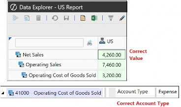
Figure 10.3
OneStream in The Real World and Troubleshooting › Troubleshooting – You’ve Got This!
Aggregation Weight
Another reason for an incorrect roll-up in an Account member can be due to an incorrect Aggregation Weight setting (default is 1) in the Relationship Properties tab.
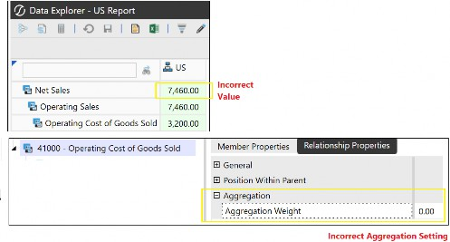
Figure 10.4
Amend the Aggregation Weight for the Operating Cost of Goods Sold. Here, we have changed the Aggregation Weight to 1.00, which means the whole amount is now rolled up to Net Sales (as the Operating Cost of Goods Sold Account Type is set to Expense, the amount is deducted from Operating Sales).
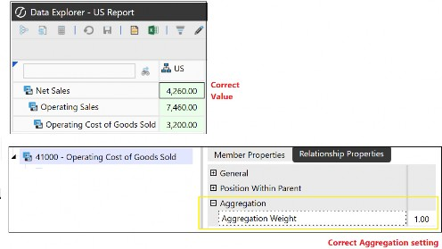
Figure 10.5
OneStream in The Real World and Troubleshooting › Troubleshooting – You’ve Got This!
Aggregation Property Configuration
The Aggregation configuration property in the Account Dimension Type provides the option not to roll up data if it doesn’t need to be reported on, or if the base members have unique values (so that rolling up does not make sense). An example might be the ‘unit price’ of each product.
If data is not rolling up to the parent in the Cube View but should be, then check that the account’s Aggregation property is set to True (which is the default setting). This applies to all the other dimension types, too.
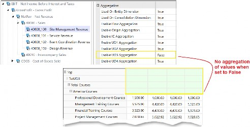
Figure 10.6 Changing the configuration will then roll up the values.
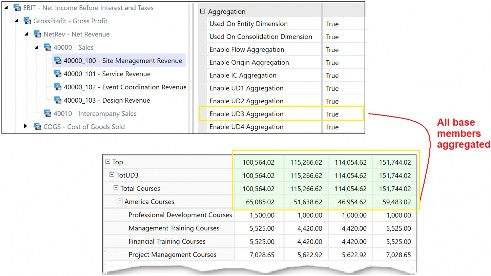
Figure 10.7
OneStream in The Real World and Troubleshooting › Troubleshooting – You’ve Got This!
Account Dimension Type – Allow Input configuration
If data in the Cube View cell is read-only green, but should be writable white, check that the Account dimension member’s Allow Input has been correctly selected as True.
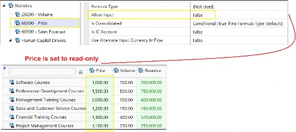
Figure 10.8
Changing the configuration to True will make cells writable as long as the Cube View’s Can Modify Data is set to True.
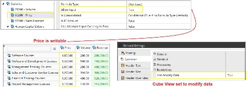
Figure 10.9
OneStream in The Real World and Troubleshooting › Troubleshooting – You’ve Got This!
Missing Currency Code
If a currency code is missing when entering or importing currency rates, then there will be a requirement to go to the Application Properties menu to select the Currency Filter, and add the required Currency Code.
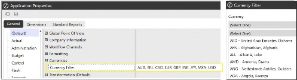
Figure 10.10
Preventing Import Errors
When setting application properties, Point Of View fields need to be populated for both Global Scenario and Global Time. These settings gets overlooked if the Global POV is not integrated into the client’s processes. However, it only needs to be completed once (but updated when required), and doing so will then prevent any import errors related to missing POV settings.
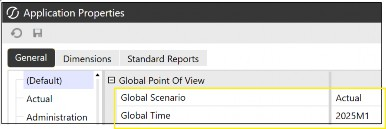
Figure 10.11
OneStream in The Real World and Troubleshooting › Troubleshooting – You’ve Got This!
Source Dimension for Data Source
When creating the data source, if the source dimensions are missing or not required, you can use the Create Source Dimension or Delete Selected Item icons in the data sources, or revert to the Integration tab in the Cubes menu to either have the dimension in the data source menu or not.
Integration > Settings > Enabled set to True uses the dimension in the data source menu; False will prevent it from being available to map to the source file.
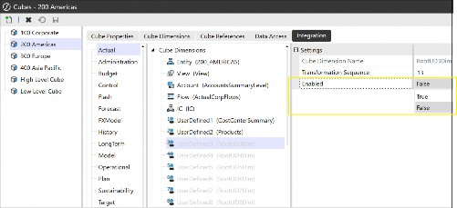
Figure 10.12
OneStream in The Real World and Troubleshooting › Troubleshooting – You’ve Got This!
Data Load Errors
If errors occur when loading data and the Global Point of View in Application Properties has been set appropriately, then you should check the transformation rules. A mapping might not exist, or the Transformation Rule Group is not assigned to a Transformation Rule Profile.
Data will then need to be re-validated after the transformation rule error has been corrected.
If the transformation rules are now correct but a validation error is stopping the data load, then check for dimension members that do not exist or which are incorrectly mapped (for example, to a parent member). Data cannot be loaded to a parent member and will cause an intersection error. Alternatively, check that entities have not been missed out when being assigned to the workflow.
Cube View Errors
If a Cube View is not visible in certain places around the platform when it should be – for example in OnePlace, Spreadsheet, or forms – check the visibility option in the Cube View Profile that holds the Cube View group where the Cube View resides.
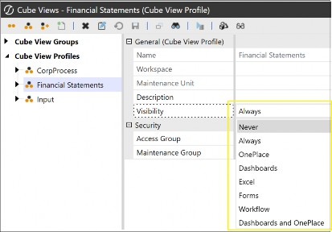
Figure 10.13
OneStream in The Real World and Troubleshooting › Troubleshooting – You’ve Got This!
Cannot Modify Data
A Cube View has various settings in the General Settings slider menu. If the Cube View is read-only but requires data to be entered manually in a cell, check that Can Modify Data is set to True in the Common section.
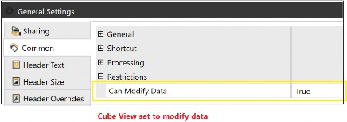
Figure 10.14
Other places to check Can Modify Data are in the rows and columns definitions.
OneStream in The Real World and Troubleshooting › Troubleshooting – You’ve Got This!
Rows and Columns Dimension Type Selection Required
If you use a Member Filter to populate rows and columns, there will be an error when running the Cube View if the correct dimension is not selected against the dimension token in the Member Filter. This is solved by checking the Member Filter Dimension Type has been selected from the drop-down to the left of the Member Filter field before running the Cube View, as shown in Figure 10.15.
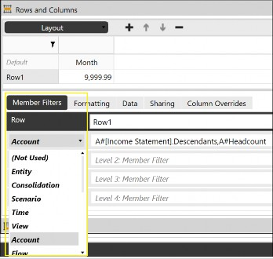
Figure 10.15
OneStream in The Real World and Troubleshooting › Troubleshooting – You’ve Got This!
Cube View Cell POV
The Cell POV information can help troubleshoot an unexpected cell value. This is done by viewing each dimension member to then conclude if there is an incorrect selection of a member.
Member Script And Formula Syntax uses Cb# which represents the dimension tag for the cube, with the script providing the interections for Cube View troubleshooting, XFGetCell for Spreadsheet troubleshooting, and XFCell for extensible documents.
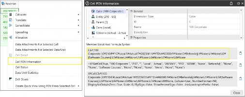
Figure 10.16
OneStream in The Real World and Troubleshooting › Troubleshooting – You’ve Got This!
Drill Down
When investigating cell values, Drill Down is a useful tool. It is opened by right-clicking a cell and selecting Drill Down. When a new window opens, the amount in the cell, cube names, and all the dimension types with their selected members are shown.
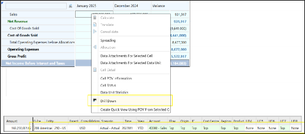
Figure 10.17
From the first drill down window of Figure 10.17, further analyses can be performed by drilling down on the members that have a green cell background, as shown in Figure 10.18.
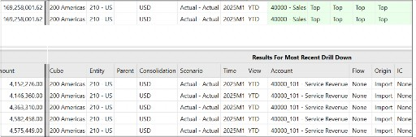
Figure 10.18
If the Origin dimension is showing the member O#Import, a right-click provides the ability to select Load Results for Imported Cell. The Navigate to Source Data button provides further options to drill down and revisit the original source document if required.
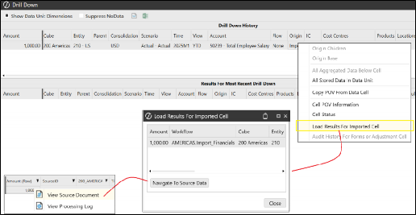
Figure 10.19
OneStream in The Real World and Troubleshooting › Troubleshooting – You’ve Got This!
Audit History
Audit History For Forms or Adjustment Cell will be available for any base intersection Origin members that are showing O#Forms or O#AdjInput members in the initial drill down.
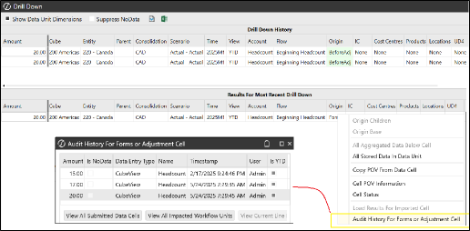
Figure 10.20
OneStream in The Real World and Troubleshooting › Troubleshooting – You’ve Got This!
Workflow Profile
Check to see whether the Workflow Profile configuration includes the required artifacts (for example, Data Source, Transformation Rule Profile, Confirmation Rule Profile, Certification Questions, Form Profiles, Journal Profile).
When the Workflow Profile has been created with a task, but the end-user cannot see it, this can be due to security, where the user has not been assigned to the security group responsible for the task.
In turn, check that the Profile Active has been set to True for the Scenario Type the user is working on.
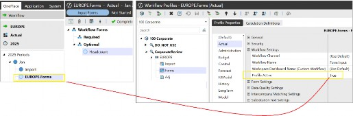
Figure 10.21
OneStream in The Real World and Troubleshooting › Troubleshooting – You’ve Got This!
Task Activity and Processing Log
Task Activity can be used to review error messages to pinpoint where a process may have failed. The workflow has a configuration setting to initiate further detailed logging, which explains the various task types by description that can be drilled down further, along with the server’s name and duration of the task. This feature is usually only turned on for a short while to avoid the log file filling up unnecessarily.
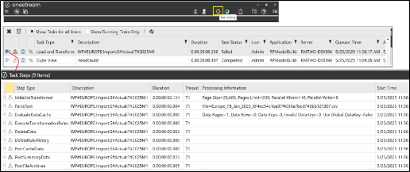
Figure 10.22
For detailed information, such as data source import errors (which may result from dimension types not being defined in the data source, or an incorrect file format), the processing log can be accessed by clicking the View Last Log File Processed For Current Workflow Profile button.
Once opened, the log codes can be used to determine the cause of the error.
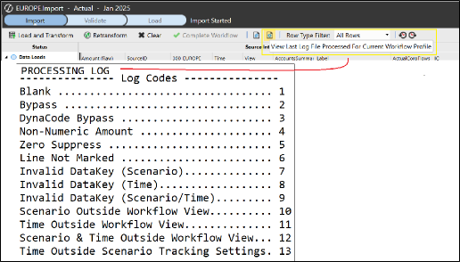
Figure 10.23
OneStream in The Real World and Troubleshooting › Troubleshooting – You’ve Got This!
Dashboard Issues
As already pointed out, when building dashboards, a standard and consistent practice needs to be adopted. This is not only to have a neat and logical setup, but also to make troubleshooting issues faster and easier to locate. Certain issues – such as data adapters not being used by components, or buttons not being configured to have an action, or the combo box not showing a drop-down due to a missing parameter – can all be deduced by working backwards to locate the missing part.
OneStream in The Real World and Troubleshooting
Carry On Learning
With OneStream being a multifunctional platform that covers many use cases and constantly evolves, the learning doesn’t just stop. This book aims to cover the fundamental aspects of the platform, which will serve as the basis for understanding and utilizing OneStream effectively.
With further features and best practices being introduced, the knowledge already obtained so far can be elevated by embracing additional OneStream book publications, Navigator, OneCommunity, and by attending various OneStream events.
OneStream in The Real World and Troubleshooting
Conclusion
In some ways, this chapter has brought us to the end of the book with the beginnings of how an organisation learns about OneStream projects. We can then circle back to the first chapter, where we introduced the platform.
A project can never be risk-free, but it can be minimized by adopting the structured phases and good practices discussed in this chapter. Collaborating with the client to form a project team, plus having a sponsor and buy-in from stakeholders, will help make a project a success. In turn, the design document will provide a template during the build and then become a resource for the administrator of the OneStream platform.
Above, we discussed how testing is an important phase in any project, but it is also an ongoing concern. When an administrator manages the platform to meet further business requirements, testing in the development environment will still take place before said addition or enhancement is migrated to production.
The administrator, often regarded as the knowledgeable expert on OneStream, works either independently or as part of a center of excellence team and possesses the skills to overcome business challenges within the platform. Business experience and a knowledge of the platform build enable the administrator to be well-equipped for troubleshooting eventualities. Knowing how to solve issues with minimal disruption to the business can only add kudos and recognition as a OneStream specialist.
Thank you for being part of the OneStream journey over the course of this book. Much has been learned, and you are now well-positioned to further discover the full potential of OneStream as part of your personal voyage. Go have fun with it!
Access Group - 41, 137
Artifacts - 8